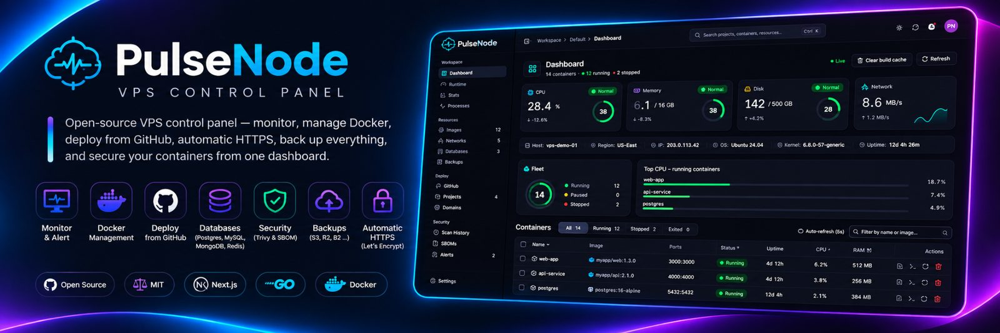

The open-source VPS control panel for the servers you actually run
Monitor your server, manage Docker, deploy GitHub projects with automatic HTTPS, provision and back up databases, and scan containers for vulnerabilities, all from one self-hosted dashboard. Free and MIT licensed.
curl -fsSL https://raw.githubusercontent.com/SakithaSamarathunga33/PulseNode/main/install.sh | bashRuns on any Linux VPS with Docker and Docker Compose v2 (amd64 or arm64). The installer creates your admin login and prints the dashboard URL.

Everything one server needs, in one dashboard
Monitor
- Live CPU, RAM, disk I/O and network, read from /proc
- Per-container usage and up/down history
- Process explorer with suspicious-process detection
- Alerts to Slack, Discord, Telegram, email or webhook
Docker and databases
- Containers, images, networks, logs and an in-browser shell
- Provision PostgreSQL, MySQL, MongoDB and Redis
- Encrypted scheduled backups to disk or any S3-compatible bucket
Deploy from GitHub
- Dockerfile, Docker Compose, Nixpacks and frontend/backend monorepos
- Push-to-deploy with zero-downtime swaps and one-click rollback
- Automatic HTTPS via Traefik and Let's Encrypt
Secure by default
- Trivy vulnerability scans and Syft SBOMs
- Mandatory login, revocable sessions and an audit log
- Hardened app containers and a Compose allow-list
- Safe self-update with automatic rollback
PulseNode vs Portainer, Netdata and Coolify
Running a single VPS usually means juggling separate tools for metrics, Docker, deployments and backups. PulseNode covers all of them for one or two servers.
| PulseNode | Portainer | Netdata | Coolify | |
|---|---|---|---|---|
| Live host metrics | Yes | No | Yes | Basic |
| Docker containers, images, networks | Yes | Yes | View only | Partial |
| Git push-to-deploy with rollback | Yes | Stacks | No | Yes |
| Automatic HTTPS for deployed apps | Yes | No | No | Yes |
| Vulnerability scanning and SBOMs | Yes | No | No | No |
| Database provisioning and backups | Yes | No | No | Yes |
| Alerts to Slack, Discord, Telegram, email | Yes | No | Yes | Yes |
| Single-command install | Yes | Partial | Yes | Yes |
Comparison from the PulseNode README. Check each project's own docs for its latest features.
FAQ
What is PulseNode?
A free, open-source control panel for a Linux VPS. One self-hosted dashboard shows live server metrics, manages Docker containers, deploys apps from GitHub with automatic HTTPS, provisions and backs up databases, scans images for vulnerabilities and sends alerts.
How do I install PulseNode on my VPS?
Run the one-command installer above on any Linux server with Docker and Docker Compose v2. It asks you to confirm the server's IP, creates your admin login, and prints the dashboard URL when it's ready.
Is PulseNode an alternative to Coolify or Portainer?
For one or two servers, yes. It combines a Docker manager, a metrics dashboard and a git-push deploy platform, plus vulnerability scanning and scheduled backups. It isn't built to manage large fleets.
Does PulseNode deploy apps with automatic HTTPS?
Yes. Connect GitHub, pick a repo and a domain, and PulseNode builds it (Dockerfile, Docker Compose or Nixpacks) and routes it through Traefik with Let's Encrypt certificates. Pushes redeploy automatically, with zero-downtime swaps and one-click rollback.
What server do I need for PulseNode?
Any Linux VPS that runs Docker, on amd64 or arm64, with 2 GB of RAM or more recommended. Port 80 serves the dashboard, and ports 80 and 443 must be free if you deploy projects.
Is PulseNode free?
Yes. It is open source under the MIT license, with no paid tier.